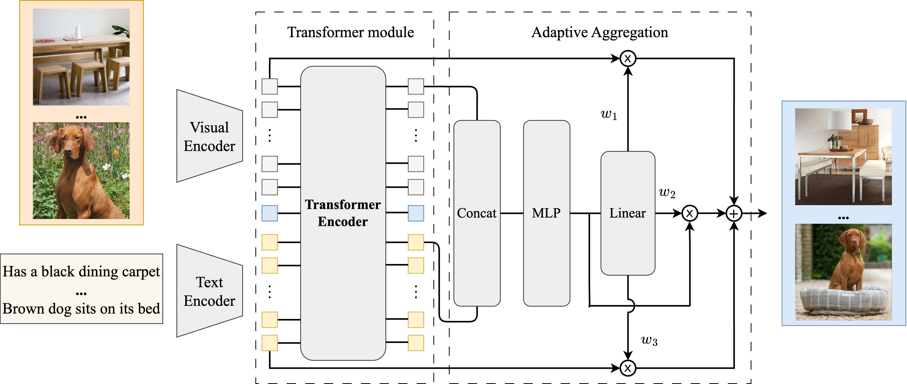
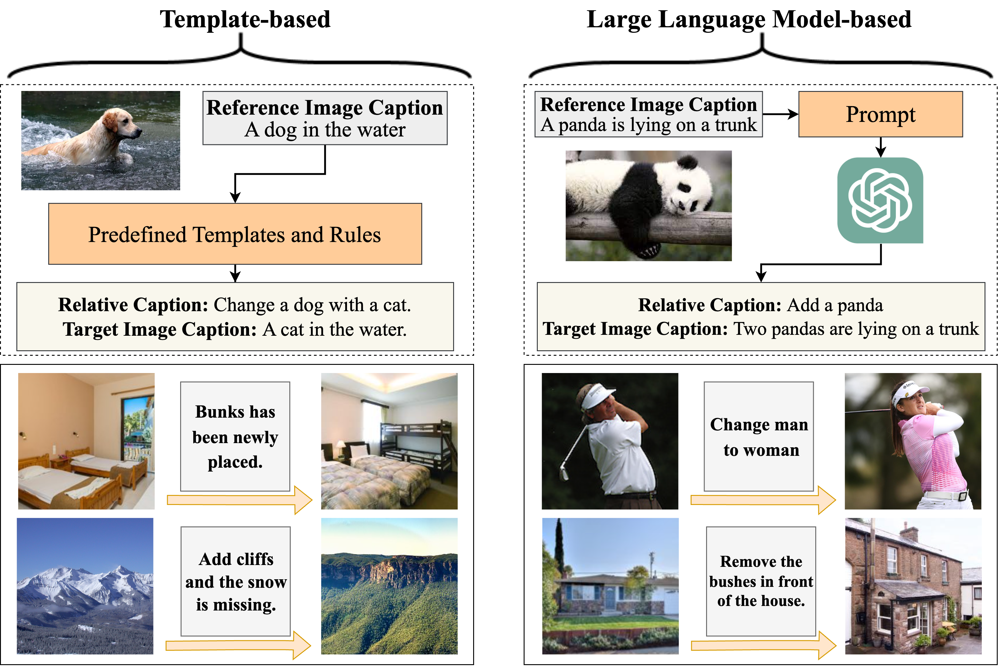
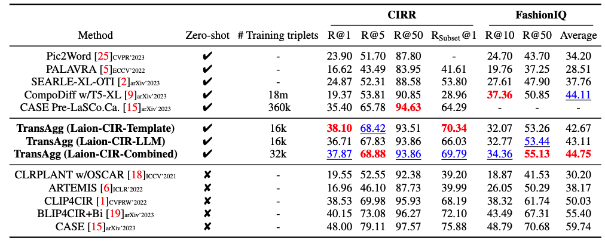

Zero-shot Composed Text-Image Retrieval
|
1CMIC, Shanghai Jiao Tong University
|
2Beijing University of Posts and Telecommunications
|
3Shanghai AI Lab
|
Abstract
In this paper, we consider the problem of composed image retrieval (CIR), with the goal of developing models that can understand and combine multi-modal information,
e.g., text and images, to accurately retrieve images that match the query, extending the user’s expression ability. We make the following contributions: (i) we initiate a scalable
pipeline to automatically construct datasets for training CIR model, by simply exploiting a large-scale dataset of image-text pairs, e.g., a subset of LAION-5B; (ii) we introduce
a transformer-based adaptive aggregation model, TransAgg, which employs a simple yet efficient fusion to adaptively combine information from diverse modalities; (iii) we
conduct extensive ablation studies to investigate the usefulness of our proposed data construction procedure, and the effectiveness of core components in TransAgg; (iv) when
evaluating on the publicly available benchmarks under the zero-shot scenario, i.e., training on the automatically constructed datasets, then directly inference on target downstream
datasets, e.g., CIRR and FashionIQ, our proposed approach either performs on par with or significantly outperforms the existing state-of-the-art (SOTA) models.
Architecture

An overview of our proposed architecture, that consists of a visual encoder, a text
encoder, a Transformer module and an adaptive aggregation module.
The Dataset Construction Procedure
An overview of our proposed dataset construction procedure, based on sentence
template (left), or large language models (right). In order to train the CIR model, we need to construct a dataset with triplet samples, i.e., reference image, relative caption, target image. Specifically, we start from the Laion-COCO
that contains a massive number of image-caption pairs, and then edit the captions with sentence templates or large-language models to retrieve the target images.

Results
We compare our method with various zero-shot composed image retrieval methods on CIRR
and FashionIQ. As shown in Table 3, on CIRR dataset, our proposed model achieves state-of-the-art results in all metrics except for Recall@50. While on the FashionIQ dataset, our
proposed TransAgg model trained on the automatically constructed dataset also falls among
the top2 best models, performing competitively with the concurrent work, namely CompoDiff [9]. Note that, CompoDiff has been trained on over 18M triplet samples, while ours only
need to train on 16k/32k, significantly more efficient than CompoDiff.

Acknowledgements
Based on a template by Phillip Isola and Richard Zhang.